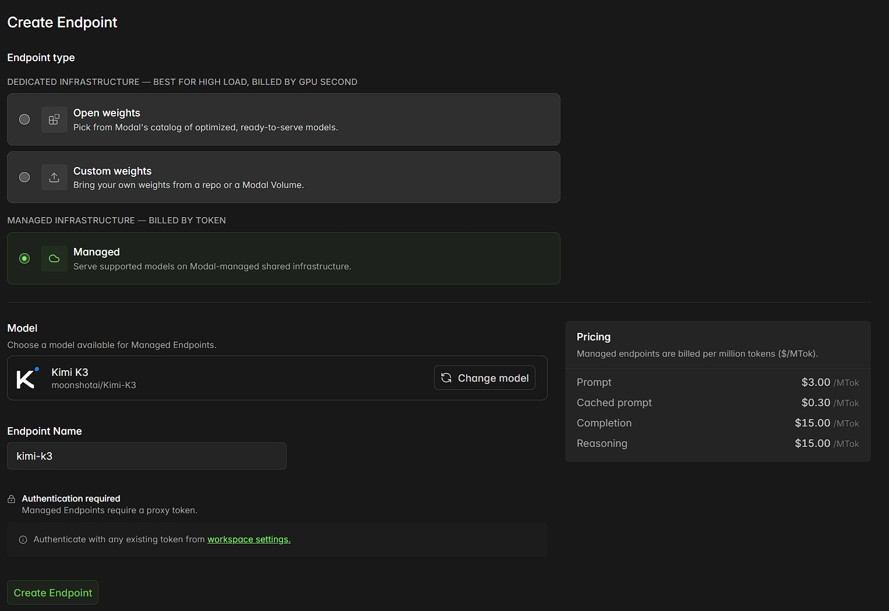

Modal × Kimi K3 Shared API｜OpenAI 相容端點、每月 $30 credits 與帳單風險提醒
來源是 AK（@darkseoking）在 Threads 分享的 Modal × Kimi K3 使用提醒。貼文重點是：Modal 已推出 Kimi K3 Shared API，採 OpenAI 相容格式；Starter 方案每月提供 $30 free credits，但註冊需綁定信用卡，超額可能自動扣款，建議先設定 Workspace Budget。

一句話摘要
Modal 的 Kimi K3 Shared API 把 2.8T 開放權重模型變成「換 endpoint 就能接」的 OpenAI-compatible 服務；對小型 AI coding / agent project 很有吸引力，但真正該一起保存的是 credits、token pricing、信用卡與 budget guardrail。
Threads 可擷取資訊
| 欄位 | 內容 |
|---|---|
| 作者 | AK（@darkseoking） |
| 可見時間 | 2 小時前（擷取於 2026-07-28） |
| 可見互動 | 約 1,419 次瀏覽、25 讚、2 則回覆、3 repost/引用、8 分享/互動（頁面快照） |
| 主張 | Modal 推出 Kimi K3 Shared API；OpenAI 相容；Starter 每月 $30 free credits；註冊需信用卡，超額自動扣款；建議設定 Workspace Budget |
| 配圖 | Modal「Create Endpoint」畫面，選擇 Managed infrastructure，模型為 Kimi K3 / `moonshotai/Kimi-K3`，右側 pricing 顯示 Prompt $3/MTok、Cached prompt $0.30/MTok、Completion $15/MTok、Reasoning $15/MTok |
官方查核：Modal 確認 Kimi K3 Shared API 已上線
Modal Model Library 官方頁確認：Kimi K3 是 Moonshot AI 的 open-weights flagship，為 2.8T-parameter Mixture-of-Experts model，具 native vision 與 1M-token context window；每 token 啟用 16 of 896 experts，架構使用 Kimi Delta Attention，釋出權重為 MXFP4 weights / MXFP8 activations。
Modal 同頁也明確寫到：
- Shared API 採 per-token 付費；
- endpoint 是 OpenAI-compatible 且已 live；
- 可把 existing SDK 指向 Modal endpoint 後開始送 request；
- 另有 Auto Endpoint，可用 Modal 調校與 autoscale 的 inference stack 建立專屬部署；
- Auto Endpoint compute 以秒計費，只在運行時收費。
Modal Blog《Kimi K3 by Moonshot now available on Modal》也確認 Kimi K3 已可用 token-based pricing on Shared API，或使用 Auto Endpoint 取得 dedicated capacity。Blog 宣稱 release day 跑到 460 tokens/s，這屬 Modal 自家效能說法，實務上仍需依區域、負載、prompt 長度、reasoning effort 與當下資源狀態實測。
價格與額度：哪些已確認？
Shared API token pricing
Modal Kimi K3 Library 與 Threads 主圖一致顯示 Shared API 以 per million tokens 計費：
| 項目 | Modal 官方價格（擷取時） |
|---|---:|
| Prompt | $3.00 / MTok |
| Cached prompt | $0.30 / MTok |
| Completion | $15.00 / MTok |
| Reasoning | $15.00 / MTok |
這代表「免費額度」不是無限使用，而是用 credits 抵扣 token charges；尤其 completion / reasoning token 成本高，agentic coding 若長時間跑迴圈，很容易快速消耗額度。
Starter 每月 credits
Modal Pricing 官方頁列出 Starter：`$0 + compute / month`，並包含 `$30 / month free credits`、3 workspace seats、100 containers + 10 GPU concurrency 等。Modal Blog 也寫到 Kimi K3 covered by Modal standard offer: `$30 of free compute every single month`，可讓使用者 month over month 使用 Shared API。
因此，貼文「不是只有新戶首月，是每個月都會重新提供」與 Modal 官方頁一致；但要注意這不是預付儲值，也不是免綁付款方式的免費玩具，而是雲端帳單 credit 模式。
帳單風險：為什麼一定要設定 Budget？
Modal Billing Docs 確認：所有 Workspaces are billed monthly；每個 billing cycle 結束會 auto-charge 該週期用量，扣除 credits 與 incremental usage charges 後收費；若在週期中首次超過特定 threshold，也可能在週期內自動收取 incremental usage。
同一頁也確認 Modal 支援 Workspace-level 與 Environment-level spend budgets。這和 AK 的提醒一致：註冊後應先設定 Workspace Budget，避免 project、agent loop、batch job 或測試程式把 $30 credits 跑完後繼續產生費用。
Kimi 官方 API 也支援 OpenAI SDK，但 provider 邏輯不同
Kimi API Platform 官方文件確認 Kimi Open Platform 提供 OpenAI-compatible HTTP APIs，可直接使用 OpenAI SDK，將 `base_url` 設為 `https://api.moonshot.ai/v1`。Kimi K3 Quickstart 也使用 Python OpenAI SDK：
```python
from openai import OpenAI
client = OpenAI(
api_key=os.environ["MOONSHOT_API_KEY"],
base_url="https://api.moonshot.ai/v1",
)
completion = client.chat.completions.create(
model="kimi-k3",
messages=[{"role": "user", "content": "Introduce Kimi K3 in one sentence."}],
)
```
Modal Shared API 的價值不只是「Kimi API 也能用 OpenAI SDK」，而是多了一個 Modal 端的 managed/shared endpoint 與 Auto Endpoint 選項；對已在 Modal 上跑 batch、sandbox、GPU workflow 或 serverless project 的團隊，整合成本會更低。
對欒帥有用的實作判斷
適合用 Modal Kimi K3 Shared API 的情境
- 想快速比較 Kimi K3 與 GPT / Claude / Gemini / Qwen 在 coding、長上下文整理、agent planning 的表現；
- 既有專案已使用 OpenAI SDK，只想換 `base_url` / provider 進行 A/B test；
- 小型 prototype、課堂 demo、短期 benchmark，需要先吃每月 credits；
- 想未來升級到 Modal Auto Endpoint 或 GPU workflow，把模型推論與其他 Modal jobs 放在同一平台。
不適合直接無腦使用的情境
- 長時間 autonomous coding agent，尤其會反覆讀 repo、跑測試、生成大量 reasoning tokens；
- 沒設定 budget / alert 的 workspace；
- 無法接受自動扣款或雲端帳單不確定性的個人帳號；
- 對資料外送、跨境、模型供應商合規有嚴格限制的企業資料。
建議 guardrail checklist
- 建立獨立 Modal workspace 或至少分 Environment。
- 先設定 Workspace Budget 與必要的 Environment Budget。
- 建立獨立 API key / proxy token，不要把 token 寫進前端或公開 repo。
- 把每次 agent run 的 max tokens、round limit、tool loop limit 寫死。
- 先用小型 fixture / fake repo 壓測費用，再接真實大型專案。
- 監控 prompt、completion、reasoning token 分布；不要只看總請求數。
- 若只是測試 Kimi K3 模型本身，也可同步比較 Moonshot 原生 API、OpenRouter、Together、Fireworks 等 provider 的價格與速度。
與既有知識庫的關聯
知識庫已有 Kimi K3 官方 API / 1M context，以及 Kimi Work workspace/agent swarm 的文章。本篇不重複介紹 Kimi K3 基礎能力，而是補上「第三方雲端 provider 如何把超大開放模型產品化」這一層：Shared API、OpenAI-compatible endpoint、token pricing、free credits 與 budget guardrails。
判讀限制
- Threads 原文是使用者工具提示，本文以 Modal 官方 Library、Blog、Pricing、Billing Docs 與 Kimi 官方 API docs 交叉查核。
- Modal 的 $30 free credits 與 Shared API pricing 可能隨時間調整，使用前需重新看 Pricing / Library 頁面。
- Modal Blog 的效能數字屬供應商宣稱；真正 latency / throughput 需依 project prompt、region、模型負載與 token 組成實測。
- 圖片截圖顯示的 Create Endpoint 介面需登入 Modal 才能實際操作；本文未使用欒帥帳號測試建立 endpoint。
原始連結
- Threads：https://www.threads.com/@darkseoking/post/DbVu2sWE0ir
- Modal Kimi K3 Library：https://modal.com/library/moonshot/kimi-k3
- Modal Blog：https://modal.com/blog/kimi-k3-by-moonshot-now-available-on-modal
- Modal Pricing：https://modal.com/pricing
- Modal Billing Docs：https://modal.com/docs/guide/billing
- Kimi K3 Quickstart：https://platform.kimi.ai/docs/guide/kimi-k3-quickstart
- Kimi API Overview：https://platform.kimi.ai/docs/api/overview